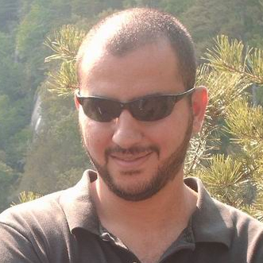
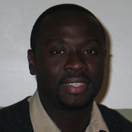

Research
My current research interests include semantic web, crowdsourcing and collective intelligence, information fusion and biomedical informatics. My research focuses on developing new semantic-based techniques for providing better information integration, search and knowledge discovery experiences for the web users. This research direction is critical for building the next generation of web, called semantic web.
The dream of the web was to create a human communication and collaboration platform for sharing knowledge and enabling a universal space for information and services. We all are now much more connected, and in turn face new resulting problems: service and information overload caused by insufficient support for information selection, organization and collaboration. The semantic web, by providing standards for formulating and distributing metadata and ontologies, enables means for information organization and selective access.
I have led or participated in development of many grant proposals on these subjects since 2001, and played a key role in making the Large Scale Distributed Information Systems (LSDIS) Lab of UGA Computer Science Department, a leading institution in the semantic web area in collaboration with my colleagues at the LSDIS Lab. My research was funded by grants from National Science Foundation (NSF), and Advanced Research and Development Activity (ARDA). In addition, I have published results of my research accomplishments in seventy peer-reviewed papers.
Research Areas
My primary research area is information systems which builds upon concepts, techniques and technologies in database, information and process management, and knowledge representation. My current research interests can be divided into following sub-areas of web information systems:
- Semantic Web and Knowledge Discovery
- Workflow Management and Web Services
- Management of Heterogeneous Data and Information Fusion
- Web-based Collective Intelligence and Crowdsourcing
- Biomedical Informatics
My past research includes the following:
- Peer-to-Peer Systems
- Object-Oriented Databases and Systems
- Transaction Processing Systems, Advanced Transaction Models and Semantic Concurrency Control
- Federated Database Systems
Research Funding & Grants
Externally Funded Research Grants
- National Science Foundation-ITR, “SemDis: Discovering Complex Relationships in Semantic Web”. PI: I. B. Arpinar, Co-PIs: J. Miller & K. Kochut. $68,947, January 1, 2007 – December 31, 2007.
- CTA Subcontract from ARDA, “An Ontological Approach to Financial Analysis and Monitoring”. PI: A. Sheth, Co-PI: I. B. Arpinar. $325,000, April 1, 2005 – September 30, 2006.
- NSF ITR-EU Collaboration, “SemGrid: Semantic Discovery on Adaptive Services Grid”. PI: A. Sheth, Other Co-PIs: I. B. Arpinar, K. Kochut, J. Miller - UGA CS & A. Joshi, T. Finin, Y. Yesha - UMBC CS. $100,000, August 1, 2005 - July 30, 2007.
- National Science Foundation-ITR, “SemDis: Discovering Complex Relationships in the Semantic Web”. PI: A. Sheth, Co-PIs: I. B. Arpinar, K. Kochut, J. Miller - UGA CS & A. Joshi, T. Finin, Y. Yesha - UMBC CS. $1,250,000 (UGA part: $597,705), October 1, 2003 – December 31, 2006.
- University Consortium for Geographic Information Science (UCGIS), “Homeland Security Workshop”. PIs: A. Sheth & L. Usery, Co-PIs: I. B. Arpinar & X. Yao, $15,000, November 2003.
- National Science Foundation-ITR (CISE-ITR-0219649), “PISTA: Semantic Association Identification and Knowledge Discovery for National Security Applications”. PI: A. Sheth, Co-PIs: I. B. Arpinar & K. Kochut. $200,000, June 1, 2002 – June 30, 2005.
- Naval Research Lab/Department of Navy, “Workflow Management for Advanced DoD Applications”. PI: A. Sheth, Co-PIs: K. Kochut & J. A. Miller, Investigator: I. B. Arpinar. $200,000, January 1, 1999 – December 31, 2000.
Internally Funded Research Grants
- UGA Faculty Research Grant, “ONTOS: Ontology-driven Web Services Integration Platform”. PI: I. B. Arpinar. $11,500, January 1, 2002 – December 31, 2002.
Technical Reports
- M. Song, J. Miller, and I. B. Arpinar, RepoX: An XML Repository for Workflow Designs and Specifications, Technical Report #UGA-CS-LSDIS-TR-01-012, University of Georgia, 43 pages, August 2001.
- J. Miller, M. Fan, S. Wu, I. B. Arpinar, A. P. Sheth, and K. J. Kochut, Security for the METEOR Workflow Management System, Technical Report #UGA-CS-LSDIS-TR-99-010, University of Georgia, 33 pages, June 1999.
Research Projects
Major projects, software systems or components developed or contributed that are commercialized, used for research and development internally or by other institutions:
Current Projects
- Web-scale Collective Argumentation using Semantic Web and Crowdsourcing.
- Semantic-enabled Proactive and Targeted Dissemination of New Medical Knowledge.
Past Projects
- SemanticQA: Web-based Ontology-Driven Question Answering.
- OntoQA: Ontology Quality Analysis and Ranking.
- SemGrid: Semantic Discovery on Adaptive Services Grid.
- Semantic Discovery: Discovering Complex Relationships in Semantic Web.
- METEOR-S: Semantic Web Services and Processes: Applying Semantics in Annotation, Quality of Service, Discovery, Composition, and Execution.
- An Ontological Approach to Financial Analysis and Monitoring.
- Ontological Approach to Assessing Intelligence Analyst Need-to-Know.
- PISTA: Semantic Association Identification and Knowledge Discovery for National Security Applications.
- Collective Knowledge Composition in a P2P Network.
- Ontology-driven Web Services Integration Platform.
- XML Process Repository (RepoX).
- Protein-Protein Interaction Mapping Workflow (Genetics Dept. & LSDIS Lab, UGA).
- METEOR Workflow Management System.
- TAIKS Field Artillery Tactical Data System (AYDIN Corp).
- Turkish Mobile Radar Complexes (TMRC) (AYDIN Corp).
- METU Workflow Management System (METUFlow) (SRDC, ODTU/METU).
- METU Interoperable DBMS (MIND) (SRDC, ODTU/METU).
- METU Object-Oriented Database Management System (MOOD) (SRDC, ODTU/METU).
- Design, and Implementation of a Reference Query Language to Utilize Network Information Services (TUBITAK).
Students
| Xin (Frank) Wang | in progress | ||
|---|---|---|---|
|  | Samir Tartir | Ontology-Driven Question Answering and Ontology Quality Evaluation
(Thesis, Talk)
Last known position: Assistant Professor, Philadelphia University, Jordan. |
2009 |
| Boanerges Aleman-Meza | Ranking Documents based on Relevance
of Semantic Relationships (Thesis, Talk)
Last known position: Research Professor, Polytechnic University of Victoria, Mexico. |
2007 |
| Jianan (Johnny) Chu | in progress | ||
|---|---|---|---|
| Kitae Myong | in progress | ||
 |
Priya Wadhwa | Semantic Matchmaking and Ranking of Medical Literature (Thesis, Talk) | 2012 |
|
Asmita Rahman | Semantic Retrieval and Distribution of Relevant Medical Knowledge (Thesis, Talk) | 2011 |
| Kapil Goenka | Mobile Web Search Personalization Using Ontological Profile (Thesis, Talk) | 2009 | |
| Sheng Yin | A Pattern-Based Annotation Approach: An Ontology-Driven Rote Extractor for Pattern Disambiguation (Thesis, Talk) | 2009 | |
| Bobby McKnight | From a Genome Database to a Semantic Knowledge
Base (Thesis, Talk)
Last known position: Centers for Disease Control and Prevention, Atlanta, GA. |
2008 | |
|  | Delroy Cameron | SEMEF: A Taxonomy-based Discovery
of Experts, Expertise and Collaboration Networks (Thesis, Talk)
Last known position: PhD Student, Wright State University, Dayton, OH. |
2007 |
|
David Hooge | Extracting and Indexing of Triplet-Based Knowledge Using Natural Language Processing (Thesis, Talk) | 2007 |
|
Sheron Decker | Detection of Bursts and Emerging Trends Towards Identification of Researchers at the Early Stages of Trends (Thesis, Talk) | 2007 |
|
Joseph E. Hassell, IV | Ontology-Driven Automatic Entity Disambiguation in Unstructured Text (Thesis, Talk)
Last known position: Cerner Corporation, Kansas City, MO. |
2006 |
| Lin Lin | Discovering Semantic Relations between Web Services using Their Pre and Post-Conditions (Thesis, Talk)
Last known position: Senior Software Engineer, Bioinquire, Athens, GA. |
2005 | |
| Jaymin Kessler | Using Genetic Algorithms to Optimize Superpeer Structure in Peer to Peer Networks (Thesis, Talk)
Last known position: Tech Team Programmer, Q-Games, Japan. |
2004 | |
|
Karthikeyan Giriloganat- han | Semantic Conflict Detection in Meta-Data – A Rule Based Approach (Thesis, Talk) | 2004 |
| Christian Halaschek-Wiener | A Flexible Approach for Ranking Complex Relationships on the Semantic Web (Thesis, Talk)
Last known position: Chief Technology Officer, Clados Management LLC, San Francisco, CA. |
2004 | |
|
Ruoyan Zhang | Ontology-Driven Web Services Composition Techniques (Thesis, Talk) | 2004 |
|
Mullai Shanmuhan | Semanta: An Ontology Driven Semantic Link Analysis Framework (Thesis, Talk) | 2003 |
(c) 2023 Ismailcem Budak Arpinar